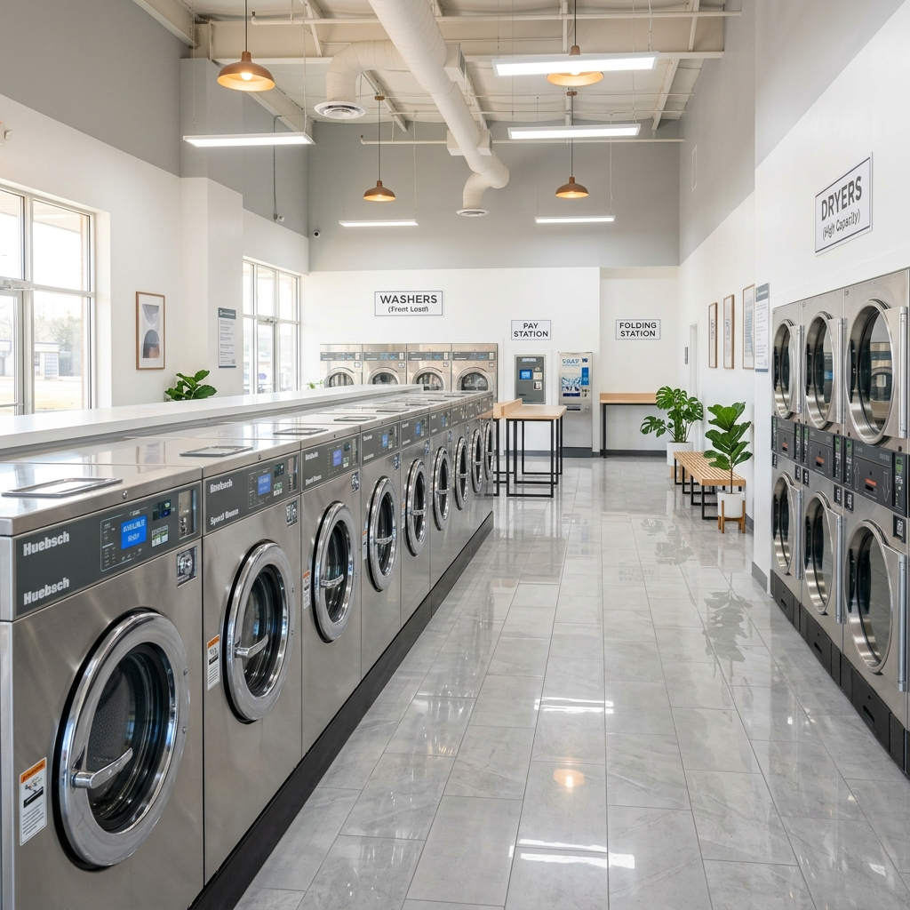

A Laundromat Built for Mamaroneck
Clean machines, honest pricing, and a community-first approach. That's Prospect Laundry.
Your Neighborhood
Laundromat
Prospect Laundry is proudly located at 124 E Prospect Ave in Mamaroneck, NY — right in the heart of the community we serve. We're not a chain, not a franchise. We're a local laundromat that genuinely cares about giving you a great experience every single visit.
Our commitment is simple: keep everything clean, keep our machines running perfectly, and make laundry as easy as possible for busy residents, working families, and anyone who just wants clean clothes without the hassle.
We've invested in modern, commercial-grade machines that get the job done faster and better. Our space is kept spotless. And our prices are fair, transparent, and competitive.

Built on Four Principles
Clean
Every machine, every surface, every visit. Cleanliness isn't optional — it's the standard.
Reliable
Our doors open at 5:30 AM every Monday through Saturday. No surprises, no closures.
Fast
Modern high-efficiency machines mean faster wash cycles and quicker turnaround for drop-off service.
Community
We're not just a business — we're part of Mamaroneck. We care about the people we serve.